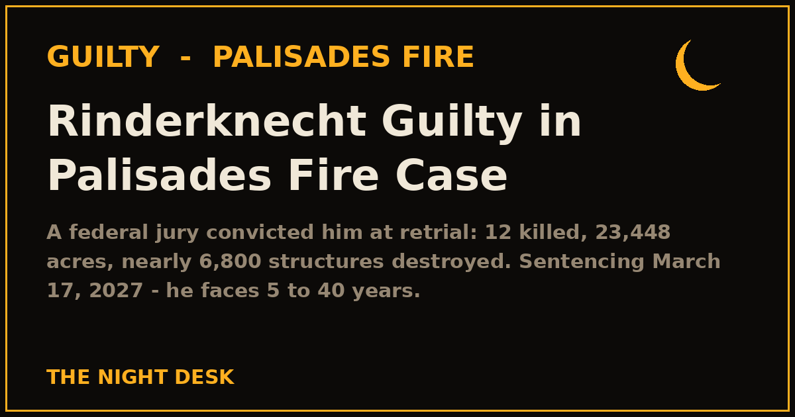

November 20, 2026 · 2 min read
Guilty: Jury convicts Rinderknecht in Palisades Fire case

Headline card by The Night Desk
Guilty: Jury convicts Rinderknecht in Palisades Fire case
A federal jury on Friday, Nov. 20, found Jonathan Rinderknecht, 30, guilty of starting the fire that became the Palisades Fire, the most destructive wildfire in Los Angeles history.
Rinderknecht was convicted on both counts he faced at retrial: destruction of property by means of fire and arson affecting property used in interstate commerce. The verdict, reported by CBS Los Angeles and confirmed in a statement from the U.S. Attorney's Office, came after a 14-day trial in the Central District of California.
A fire that hid underground for six days
According to evidence presented at trial, Rinderknecht ignited a blaze on Jan. 1, 2025 — the Lachman Fire — in the Pacific Palisades area. The fire burned undetected deep in root systems until Jan. 7, when heavy Santa Ana winds drove it above ground and it exploded into the Palisades Fire.
The toll, per the U.S. Department of Justice:
- 12 people killed
- 23,448 acres burned across Pacific Palisades, Topanga and Malibu
- 6,837 structures destroyed, with an estimated $25 billion in damage
- Some 30,000 people forced to flee, per USA Today
"Jonathan Rinderknecht deliberately ignited a fire that killed 12 people and devastated an entire community," said First Assistant United States Attorney Bill Essayli. Attorney General Todd Blanche said in a statement: "Twelve people lost their lives and thousands lost their homes because of Jonathan Rinderknecht's malicious conduct."
The second trial
This was the government's second attempt. Rinderknecht's first trial ended in a mistrial in June, when jurors deadlocked 10 to 2 in favor of acquittal. Prosecutors retried him on a narrowed indictment, dropping a lesser timber-burning count.
At retrial, which began with jury selection on Nov. 2, prosecutors leaned on cellphone data, surveillance footage and expert testimony placing Rinderknecht in the area. His defense argued the blaze was caused by fireworks. Jurors convicted on both counts after about two days of deliberation, according to the Los Angeles Times.
What happens next
U.S. District Judge Anne Hwang scheduled sentencing for March 17, 2027. Rinderknecht faces a mandatory minimum of five years and a maximum of 40 years in federal prison. He has been in federal custody since October 2025.
The case was investigated by the Bureau of Alcohol, Tobacco, Firearms and Explosives, with assistance from the Los Angeles Police Department and the U.S. Forest Service.
Sources: CBS Los Angeles, the Associated Press, and the U.S. Attorney's Office for the Central District of California, Nov. 20, 2026.
Source: U.S. Department of Justice — read the original report
← Back to latest stories